daniel-gordon — proofs
12 deterministic composition overlays.
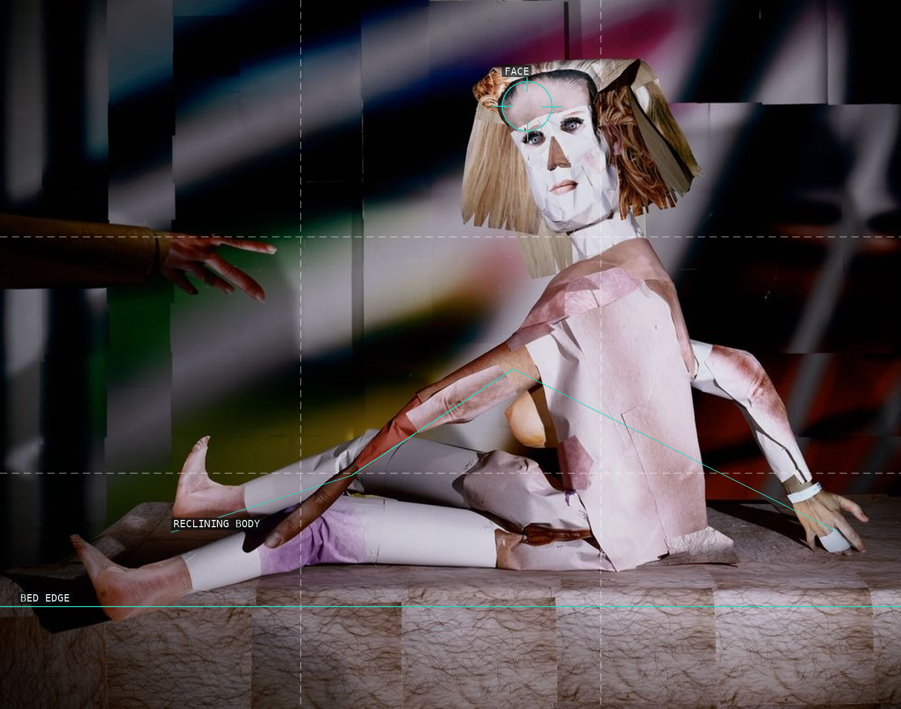
01 — Nude Portrait
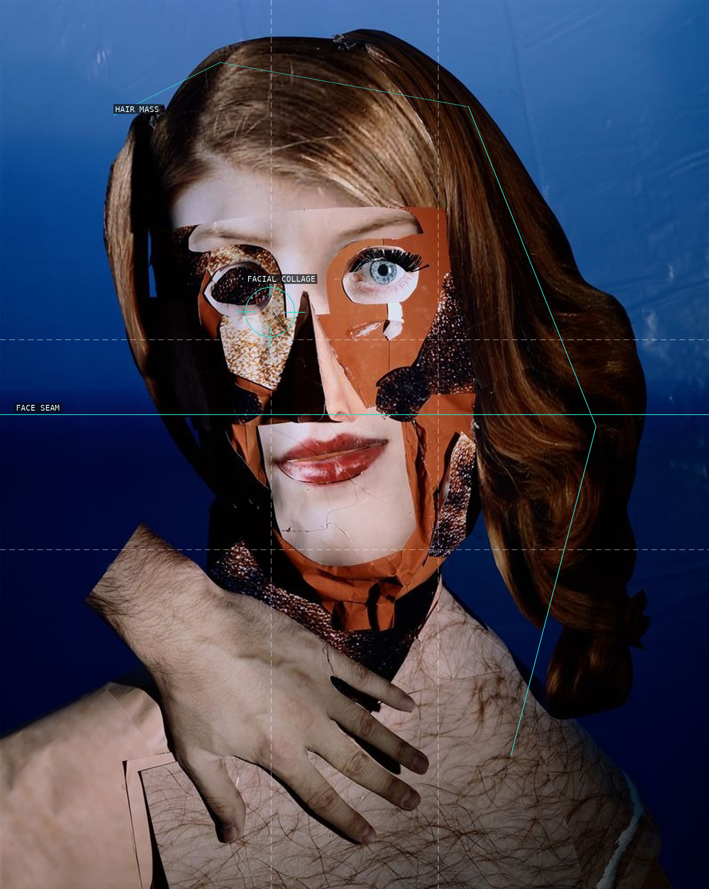
02 — Red Headed Woman
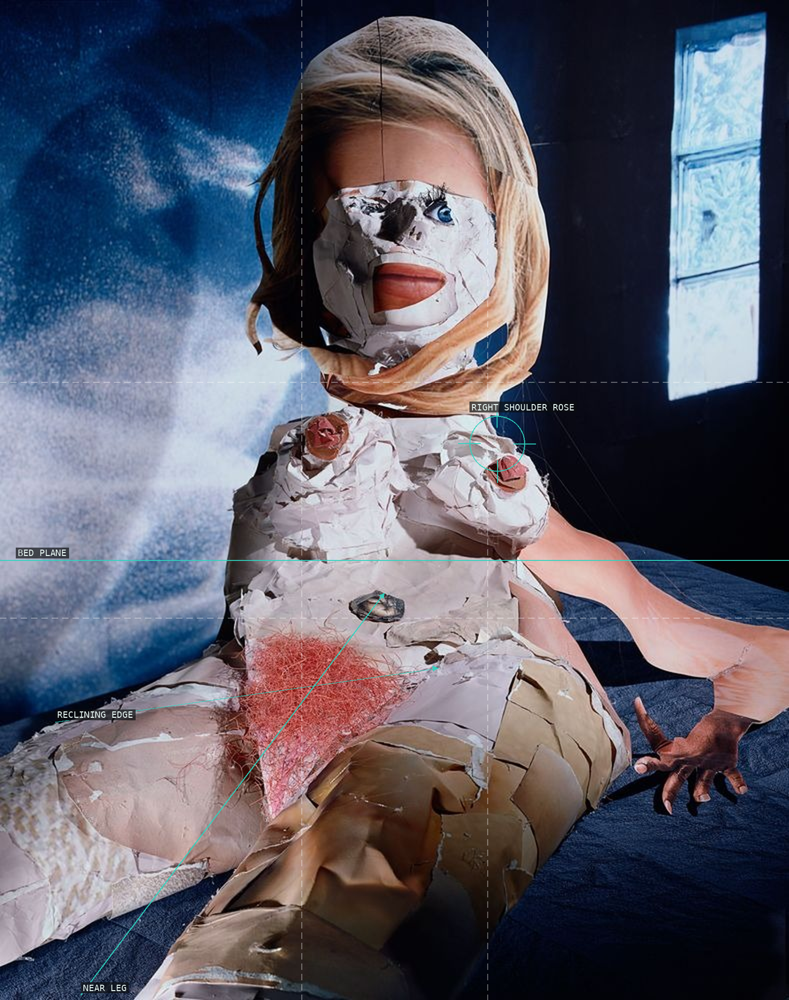
03 — Reclining Nude
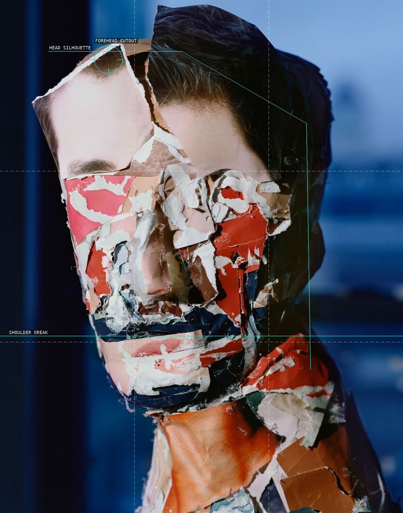
04 — Portrait
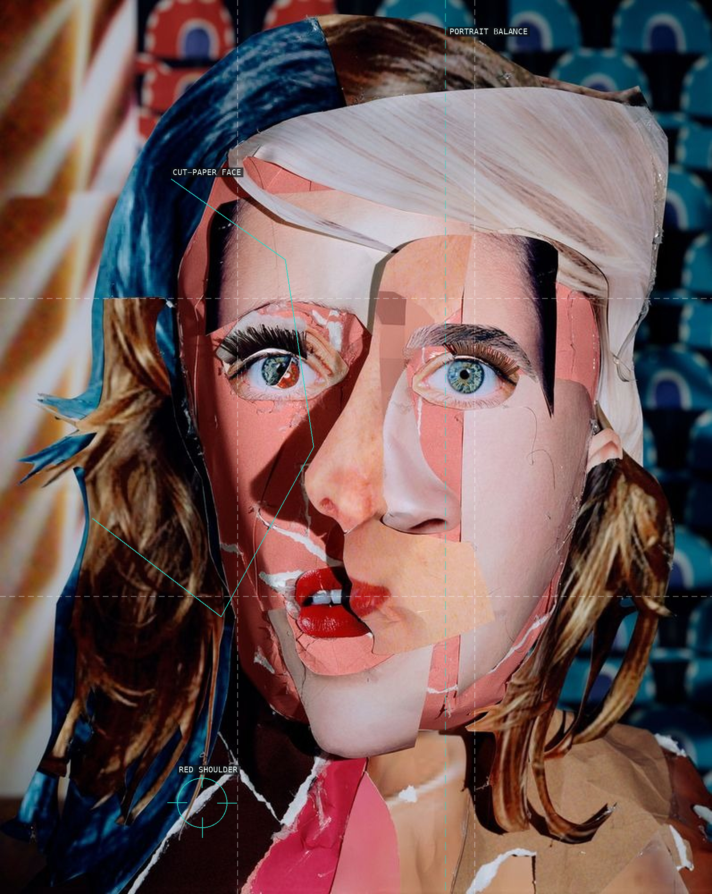
05 — Red Eyed Woman
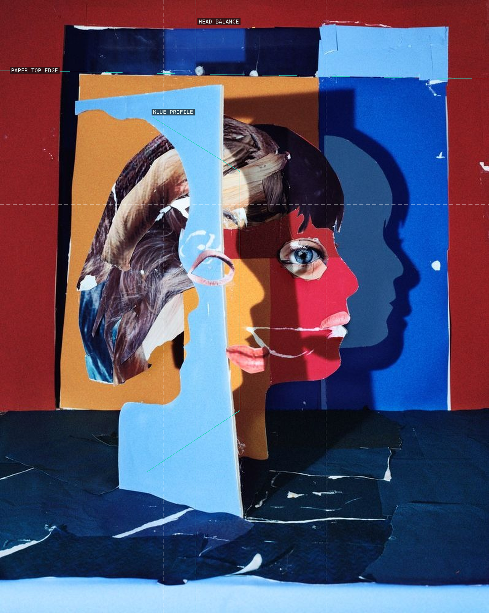
06 — Portrait in Ruby and Blue
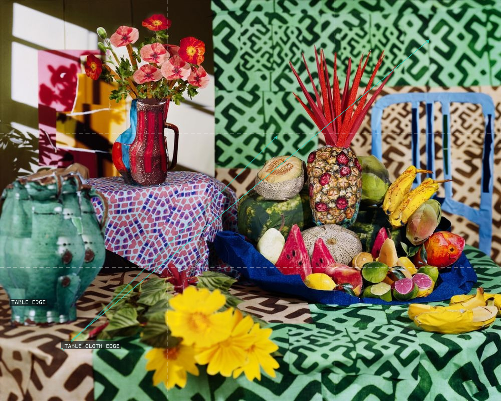
07 — Tropical Still Life
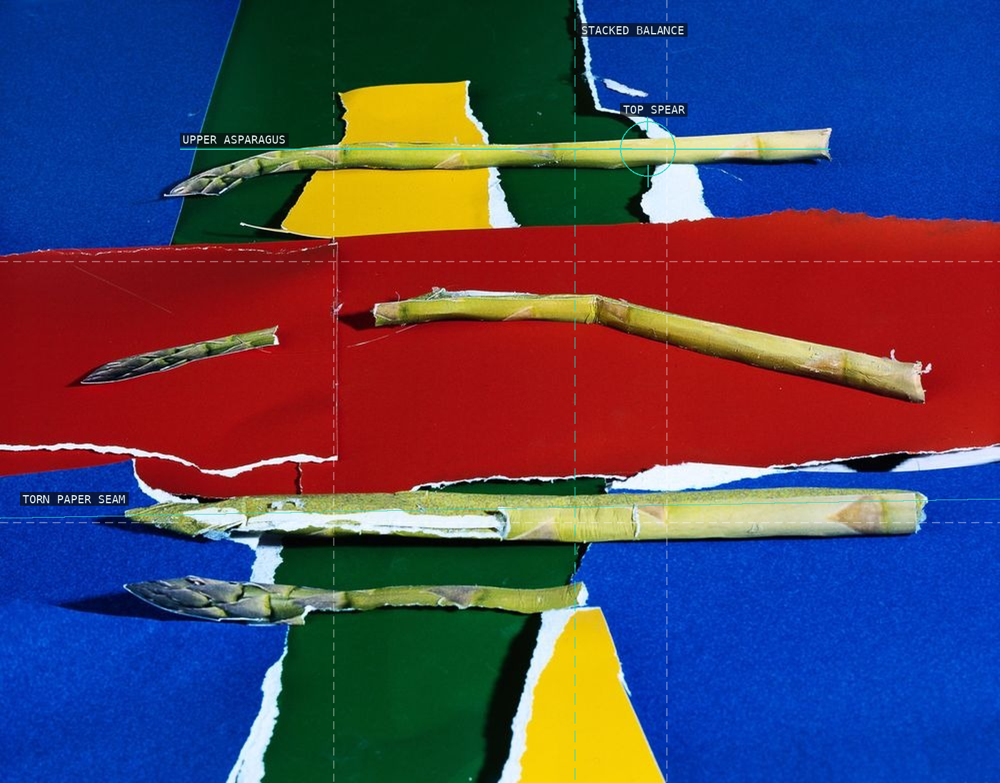
08 — Asparagus
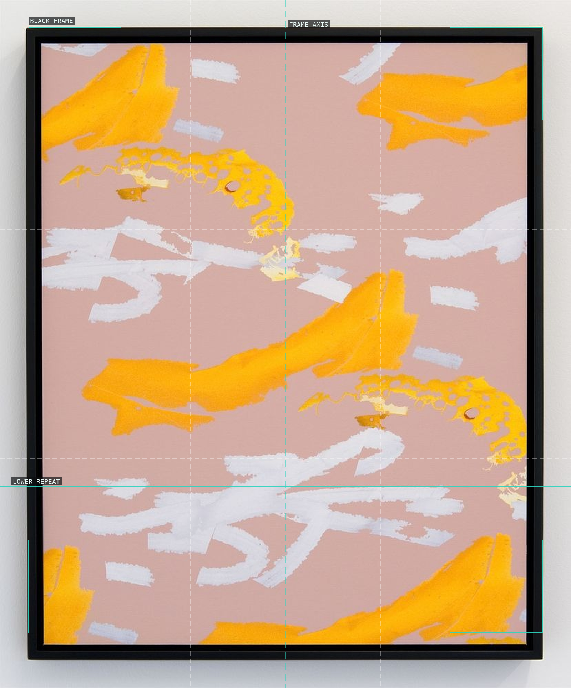
09 — Screen Selection 7
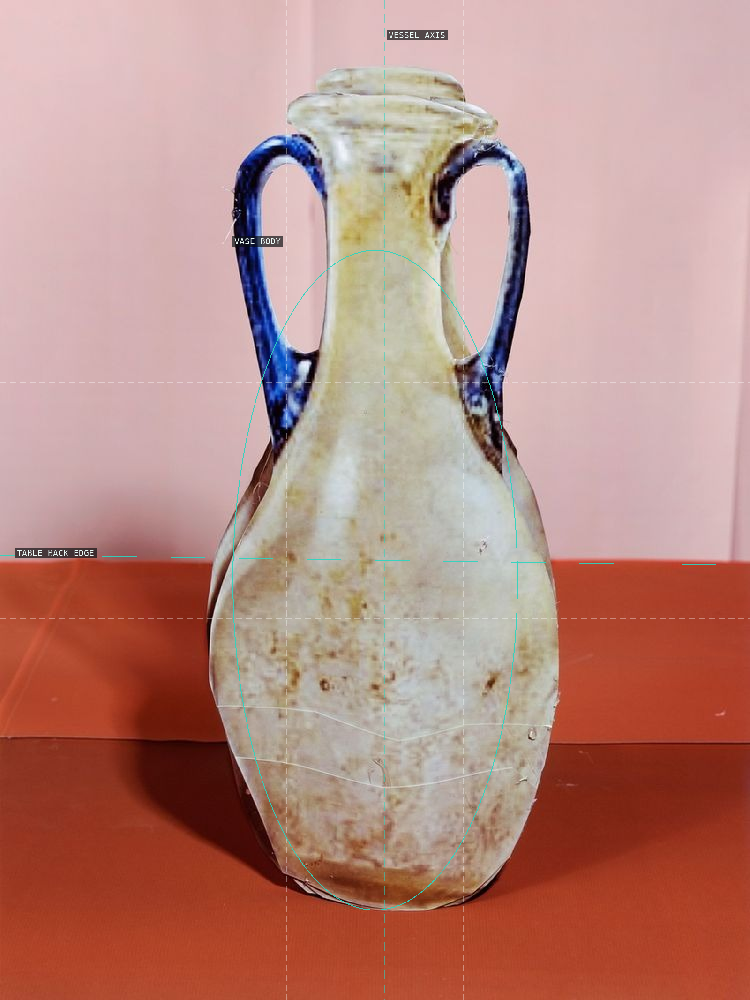
10 — Glass Vase With Blue Handles
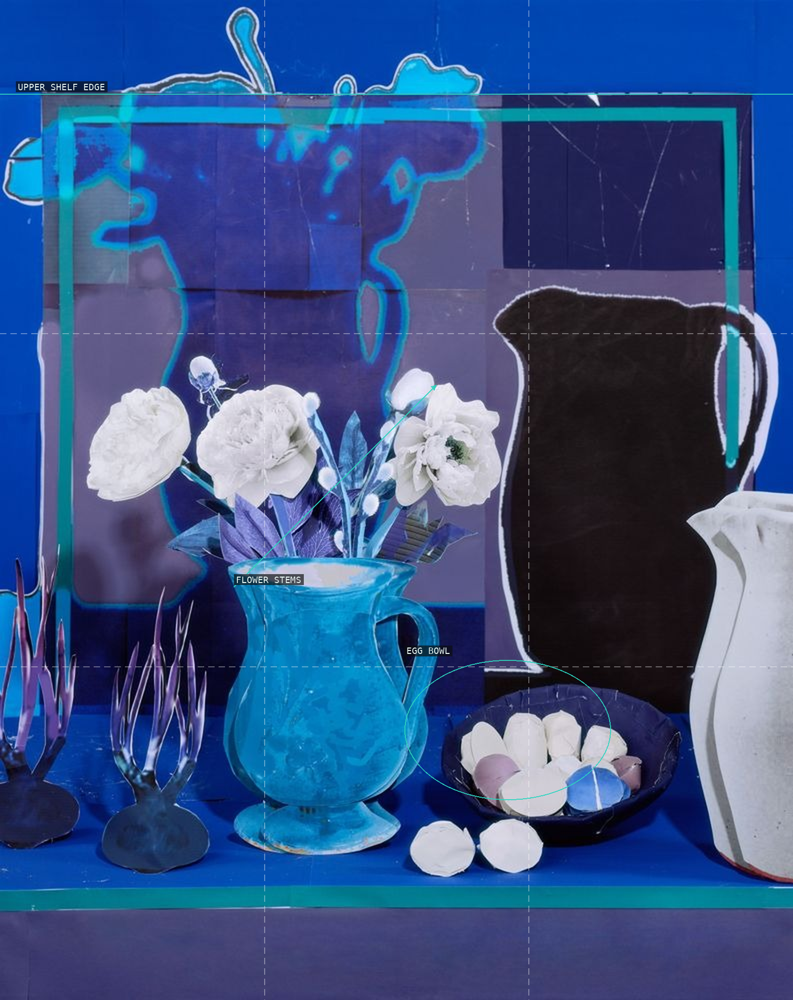
11 — Blue Still Life with White Peonies, Eggs, and Onions
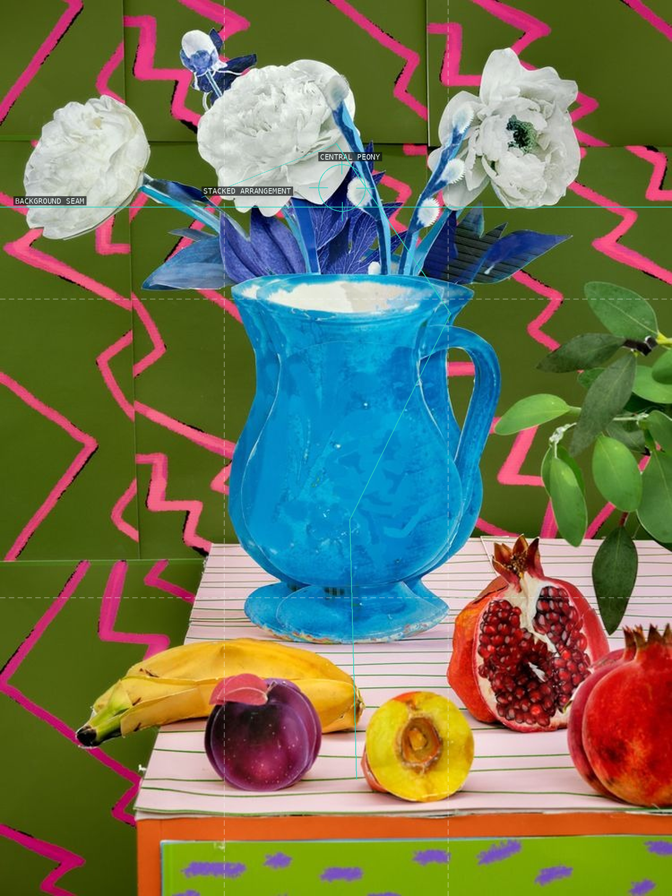
12 — Peonies and Pomegranate